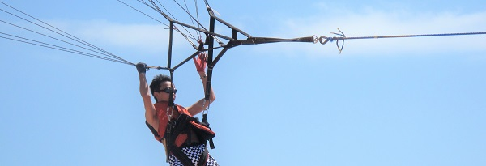

Huimin Du (Corey)
Postgraduate of Computer Science and Engineering -
- Master of Science, Ohio State University (Columbus)
coreydu@foxmail.com
LinkedIn
Resume
Campus & Individual Project
ViSSI (Visualization System of Swarm Intelligence)
Degree Project
Degree Project
openGL mapping
Serveral types of mapping&shading
Serveral types of mapping&shading
openGL Particle System (graphic)
Use openGL with C++ to give a constructure of particle system which could be organized to various of effects
Use openGL with C++ to give a constructure of particle system which could be organized to various of effects
PSO visualization (graphic, visualization)
Visualize the PSO process using openGL to observe the movement of particles in the solution space
Visualize the PSO process using openGL to observe the movement of particles in the solution space
Wireless Game Controler (game, interaction, Android)
Use gyroscope to control a game scene through bluetooth and Wi-Fi
Use gyroscope to control a game scene through bluetooth and Wi-Fi
Nebula (game, interaction, Android)
A hand-free Android game controlled with brain wave and head movement
A hand-free Android game controlled with brain wave and head movement
Irrlicht Implementation: Game Role
Use Irrlicht to construct a game role with the MD2 model file
Use Irrlicht to construct a game role with the MD2 model file
Irrlicht Implementation: First Person Shoot
Realize a simple type of first person shoot (FPS)
Realize a simple type of first person shoot (FPS)
How to mix the traffic data?
A easy way to mix the traffic data of your project
A easy way to mix the traffic data of your project
Publication
Du et al.
An Improved Particle Swarm Optimization-Based Coverage Control Method for Wireless Sensor
Network ICSI2014
http://link.springer.com/chapter/10.1007/978-3-319-11897-0_14
This paper proposes an improved discrete particle swarm optimization algorithm aimed at coverage control method of WSN, and the optimization is implemented under two processes: deployment planning and movement control.
http://link.springer.com/chapter/10.1007/978-3-319-11897-0_14
This paper proposes an improved discrete particle swarm optimization algorithm aimed at coverage control method of WSN, and the optimization is implemented under two processes: deployment planning and movement control.
Ni, Du et al.
“An Improved Dynamic Deployment Method for Wireless Sensor Network Based on Multi-Swarm
Particle Swarm Optimization
Natural Computing
http://link.springer.com/article/10.1007%2Fs11047-015-9519-0
This paper proposes an improved discrete particle swarm optimization algorithm aimed at coverage control method of WSN, and the optimization is implemented under two processes: deployment planning and movement control.
http://link.springer.com/article/10.1007%2Fs11047-015-9519-0
This paper proposes an improved discrete particle swarm optimization algorithm aimed at coverage control method of WSN, and the optimization is implemented under two processes: deployment planning and movement control.
About
Photos
Some photos about me
Some photos about me